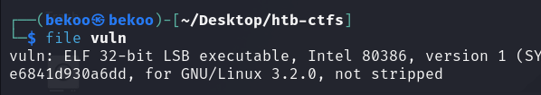
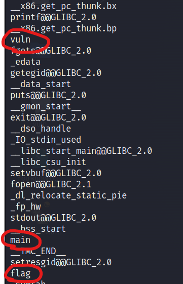
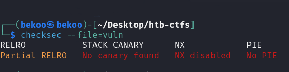
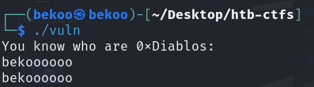
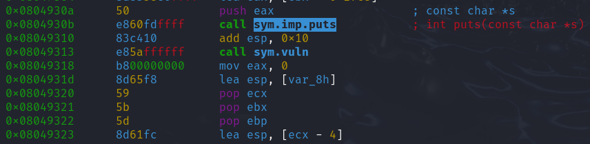
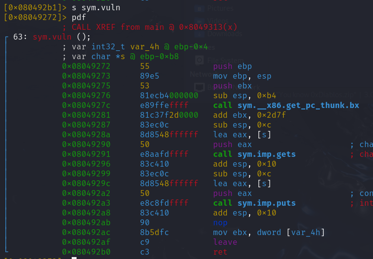
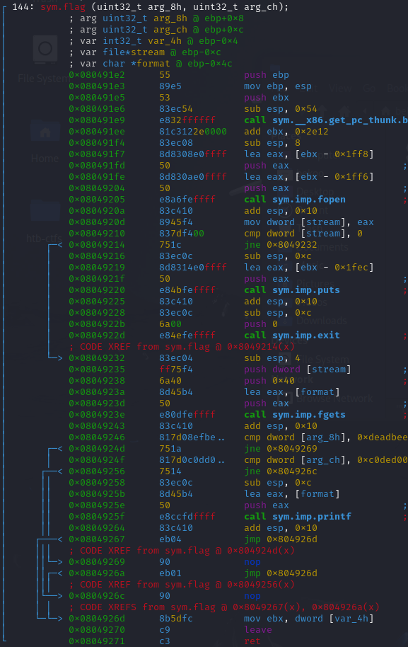

HTB 0x0 | You know 0xDiablos
Table of Contents
Introduction
Welcome to my First CTF write-up! In this post, i’ll be presenting the solution to You know 0xDiablos CTF from Hack The Box.
Given Details
- Description: I missed my flag
- URL: 209.97.131.64:32522
- File: vuln
Analysis
We only have the vuln file. Let’s see details of the vuln file:

It’s an 32 bit file. Therefore an executable. After knowing this information, we can understand that the challenge is actually about reverse engineering.

When we check the security status of this program, we see that it’s completely weak.

Also when we check the functions of this program, we notice 2 functions: flag and vuln. We started to take our first step.
Challenge
After knowing this informations, we can start challenge.
First of all, we start program and take a look at what it does:

The program, outputs a message with You know who are 0xDiablos and waits for input. When we give an input, the program prints same as our input.

In the main function, the first thing we noticed called puts function. This function prints You know who are 0xDiablos message.
Afterwards called vuln function in the program. Let’s see details of the vuln function:

In the vuln function, first of all an input is taken by the gets function. Then it outputs our input with the puts function.

In the flag function, the first thing we noticed fopen function. But we’ll not go into the details of this function. Our focus will be on the vuln function.